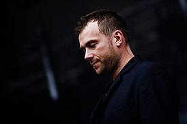
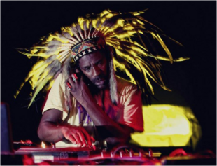
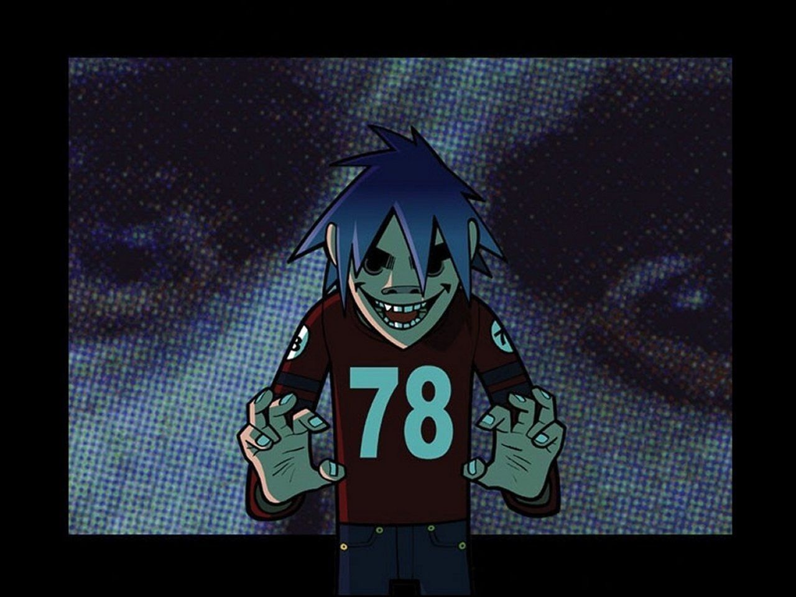
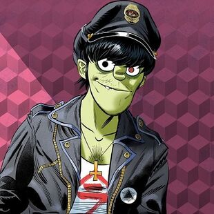
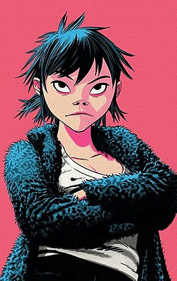

Участники группы
Реальные участники:
- Деймон Албарн
- Вокал, инструменты, автор песен, музыкальное производство (1998—настоящее время). 
- Джейми Хьюлетт
- Иллюстрации, дизайн персонажей, виджеинг, спецэффекты (1998—настоящее время).
- Реми Кабака-младший
- Иллюстрации, дизайн персонажей, виджеинг, спецэффекты (1998—настоящее время). 

Вымышленные участники:
- 2-D (Стюарт Пот)
- Ведущий вокал, клавишные (1998 — настоящее время). 
- Мёрдок Никкалс
- Бас-гитара, драм-машина (1998— настоящее время). 
- Нудл
- Гитара, клавишные, вокал (1998—2006, 2010 — настоящее время). 
- Рассел Хоббс
- Ударные, перкуссия (1998—2006, 2012 — настоящее время).

История создания
Деймон Албарн и Джейми Хьюлетт впервые встретились в 1990 году, когда. Грэм Коксон, поклонник работ Хьюлетта, попросил его взять интервью у Blur, которая на тот момент была недавно-образованной группой, участниками которой являлись Албарн и Коксон. Интервью было опубликовано в журнале "Deadline", который также публиковал комикс Хьюлетта "Tank Girl". Первоначально Джейми посчитал Деймона «высокомерным придурком», и несмотря на то, что стал одним из знакомых группы, не очень ладил с её членами, особенно после того, как начал встречаться с Джейн Олливер, бывшей девушкой Коксона. Тем не менее, Албарн и Хьюлетт разделили между собой квартиру на Уэстборн Гроув в Лондоне в 1997 году. В то время Хьюлетт разошёлся с Олливер, а Албарн уже практически разорвал свои широко-освещённые в прессе отношения с Джастин Фришманн из группы Elastica.
Идея создать Gorillaz пришла к ним, когда оба смотрели MTV.
«Слишком долго смотреть MTV — это чёрт знает что, в этом нет никакого смысла. Так что у нас появилась идея создания анимационной группы; чего-то такого, что было бы отражением этого процесса»
Концепция группы
Вымышленная Вселенная группы демонстрируется на веб-сайте и в музыкальных видео группы, а также в ряде других медиаданных, таких как короткометражные мультфильмы. Ещё была написана книга Rise of the ogre с англ. — «Становление чудовища», содержащая биографию персонажей и некоторых людей, работающих над Gorillaz. Музыка является результатом сотрудничества различных музыкантов с Албарном, являющимся единственным постоянным автором музыки, в которой прослеживаются влияния таких жанров, как альтернатива, рок, хип-хоп, электроника, даб и поп.
Дискография
Студийные альбомы: |
Сборники: |
Туры: |
|---|---|---|
| Gorillaz (2001) | 2001 — G-Sides | Gorillaz Liveruen (2001—02) |
| Demon Days (2005) | 2007 — D-Sides | Demon Days Liveruen (2005—06) |
| Plastic Beach (2010) | 2011 — The Singles Collection 2001—2011 | Escape to Plastic Beach Tourruen (2010) |
| The Fall (2010) | Humanz Tourruen (2017) | |
| Humanz (2017) | The Now Now Tourruen (2018) | |
| The Now Now (2018) | ||
| Song Machine, Season One: Strange Timez (2020) |
Награды и номинации
- 2001 — Первый альбом группы Gorillaz был продан в количестве 7 миллионов копий и внесен в Книгу рекордов Гиннесса как «Лучшая виртуальная группа».
- 2001 — Первый альбом группы Gorillaz был номинирован на Mercury Prize 2001 года, но позже был снят с номинации по просьбе группы.
- 2005 — Второй альбом группы Demon Days стал платиновым в Англии и двойным платиновым в США.
- 2006 — Второй альбом группы Demon Days получил 5 номинаций Грэмми и выиграл в «Лучшая поп-группа с вокалистом».
- 2007 — Gorillaz и Demon Days превышают 15 миллионов копий.